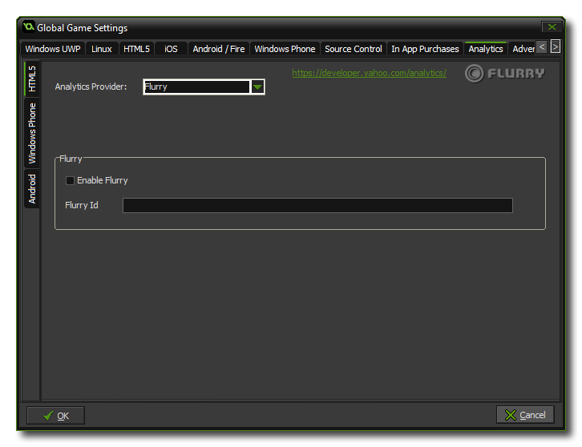

This tab permits you to add analytics to your game, permitting you to use certain third-party products to track your game and its sales or plays. There are three sub-tabs for this, one for HTML5, one for Windows Phone and one for Android.
For all available platforms you can specify whether to use flurry analytics or google analytics to track your game, but due to the nature of these functions, you can only have one active at a time, so make sure that you check the correct one! once you have flagged the enable flurry or enable google analytics check-box for your analytics provider, you should also add the unique id that you have been assigned into the appropriate area for html5, and for android, you will be prompted to install the appropriate extension (and you add the id value into the extension functions). you can find further information about this from the following knowledge base article: analytics provider demos v1.4. checking these boxes does not install the extension and you will need to download it independently from the YoYo Games Marketplace and import it into your game project.
For more general information on analytics, please see the YoYo Knowledge Base.
NOTE: This functionality is limited to the Professional Version of GameMaker: Studio and will depend on the target modules that you
have installed.